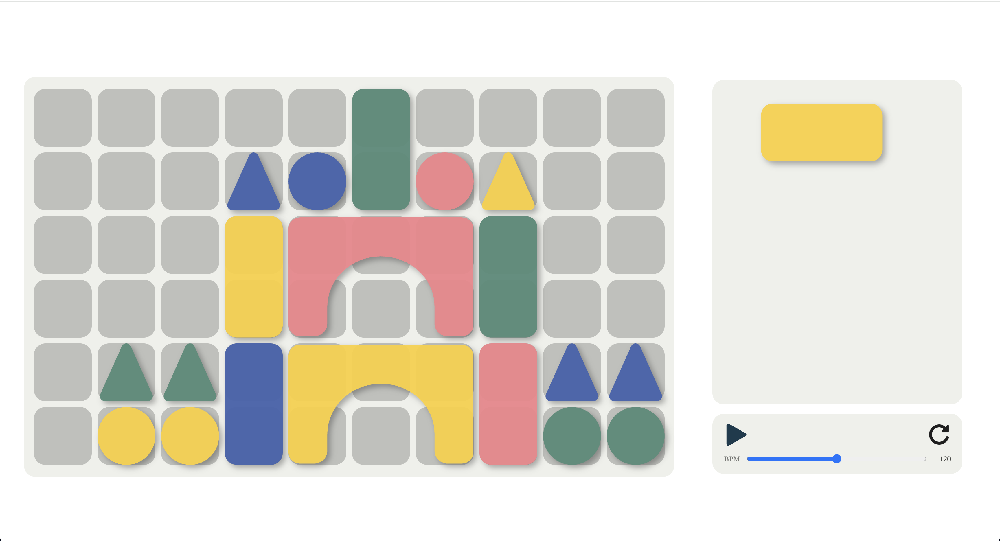
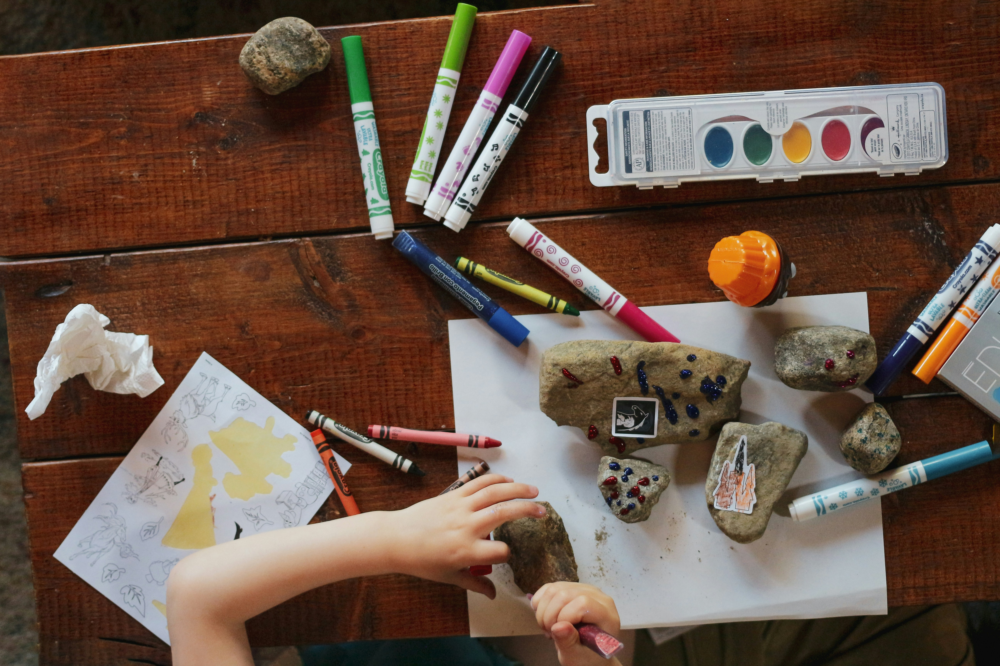
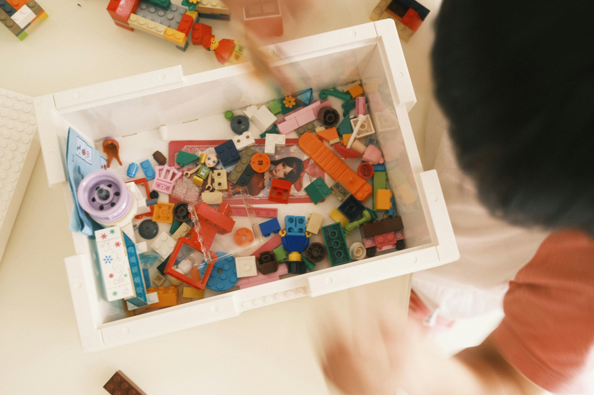
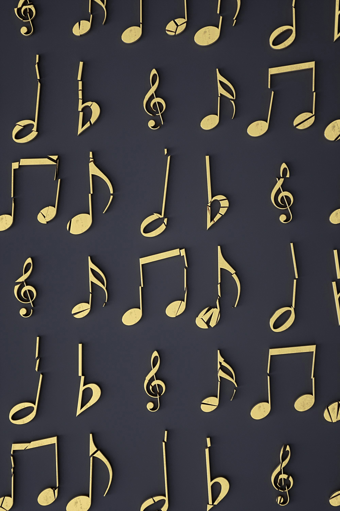
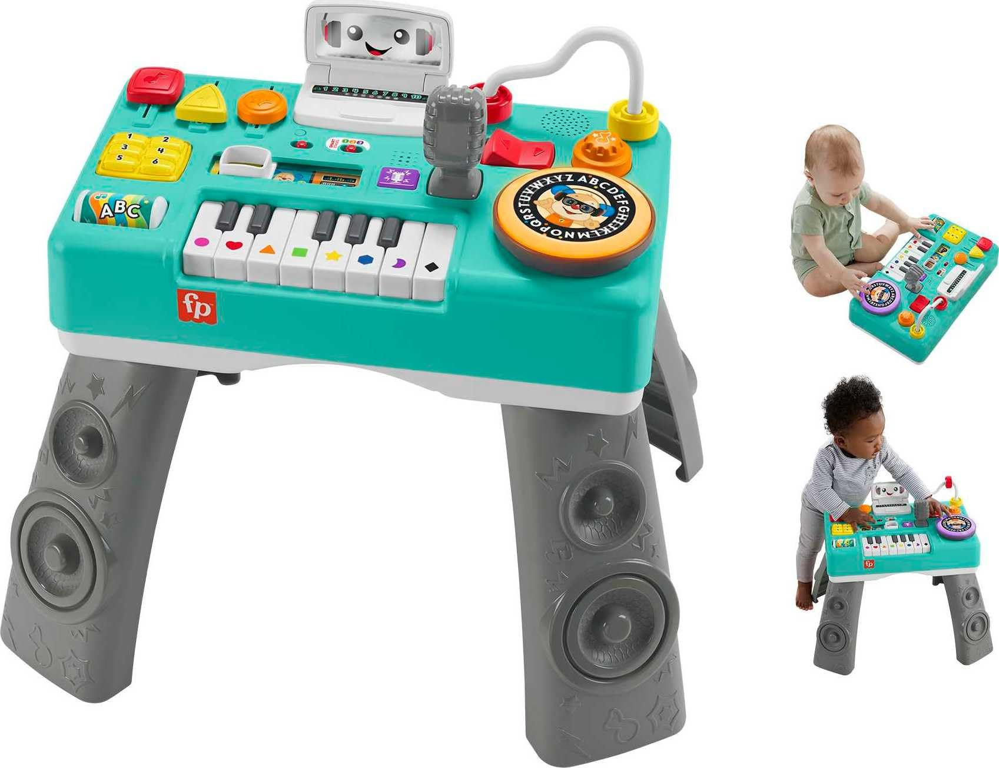
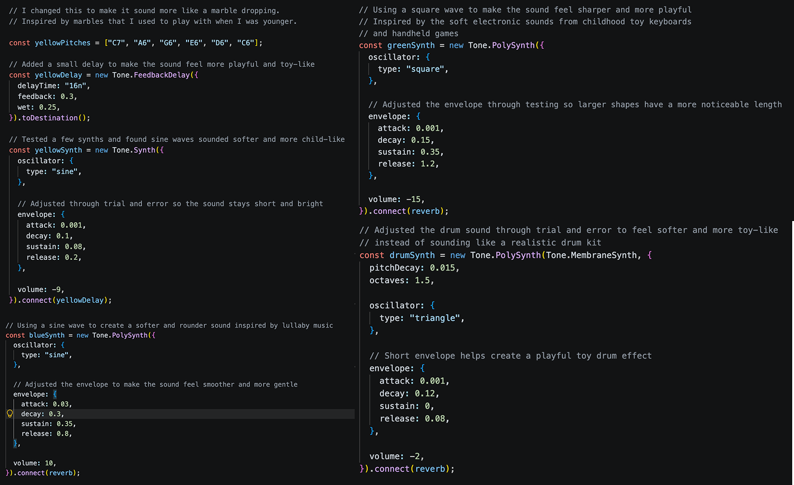
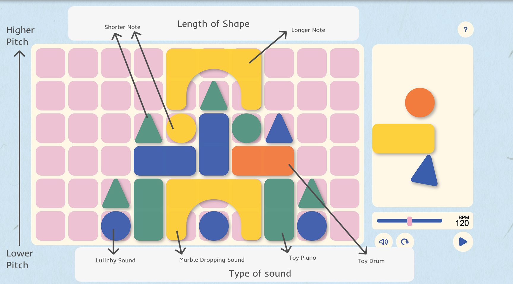
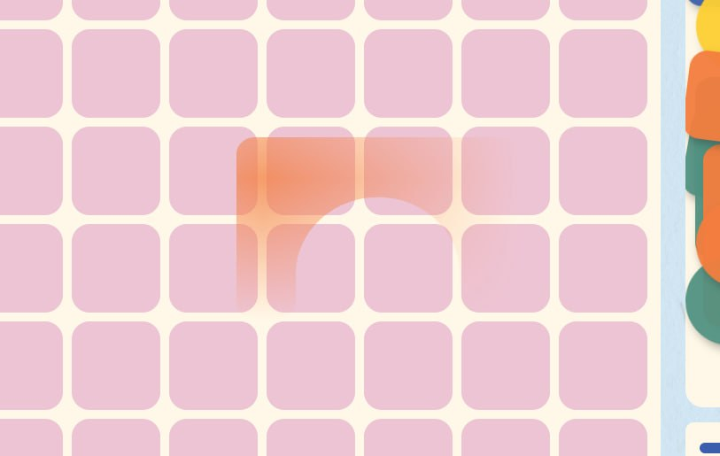

skip to
Purpose
Initially, I proposed creating a simple interactive tool where users could build structures using digital blocks and transform those constructions into sound. Looking back at the final outcome, I believe I successfully achieved this goal through the implementation of a drag-and-drop system that allows users to freely arrange blocks and create their own musical compositions.

Assingment 2 Prototype
One of my main goals was to create a tool that encouraged exploration and experimentation rather than focusing on producing perfect music. The final design allows users to create playful sound compositions through visual construction, giving them the freedom to experiment without worrying about achieving a specific outcome. Instead, the experience focuses on having fun and enjoying the creative process itself.

I also wanted to create an interaction that connected back to the
childhood experience of building with wooden blocks. Through the
drag-and-drop building system, users are able to recreate that
familiar process of constructing something from simple pieces.
However, I wanted to push this idea further by introducing sound as
an additional layer of interaction. Rather than simply recreating a
nostalgic experience, the project transforms it into something new
by allowing users to create music through building.
Overall, I believe the final design successfully fulfils my original purpose by combining visual construction, sound, and play into a single experience. It encourages users to experiment, explore, and create freely while offering a novel way of interacting with a familiar childhood activity.

Assingment 3 Submission
Values
In my judgement of worth, I identified:
1. Playfulness
2.Imaginative
3. Curious
These values are reflected throughout the final design through the interaction, visual styling, and overall experience. The use of colourful shapes, toy-inspired sounds, and a playful visual style helps recreate the imaginative experience associated with children's building blocks. Additionally, the absence of goals, scores, or correct outcomes creates a non-judgemental environment where users can freely experiment without fear of failure.
A large part of this project was creating an experience that encouraged people to have fun for the sake of having fun. As adults, much of our creativity is often directed towards university assignments, work, or solving problems. I wanted to create an experience that brought users back to a time when creativity existed without pressure or expectations. Similar to building blocks, the focus is not on creating something perfect but on enjoying the process of making, exploring, and experimenting.

Playfulness

Playfulness was one of the most important characteristics I wanted
to communicate. For me, playfulness is not just about bright colours
or entertaining interactions, but about creating without a specific
purpose or outcome in mind. To support this idea, I intentionally
designed the experience to feel temporary and ever-changing. The
randomised pieces create a quality similar to physical building
blocks, where children build something, enjoy the process, then pack
everything away and start again. This lack of permanence encourages
users to focus on exploration rather than becoming attached to the
final result.
Imaginative
The value of imagination is reinforced through the random generation of shapes. Every time the website is refreshed, users are presented with a different collection of pieces, encouraging them to approach the interaction differently each time. This creates opportunities for curiosity, discovery, and experimentation, as users are constantly challenged to think of new ways to combine shapes and sounds. In many ways, the experience embraces the idea that the only limit is the user's imagination. By generating a new set of blocks with each refresh, the website creates a constantly changing experience that encourages users to imagine, create, and experiment in different ways every time they interact with it.


Curious
The value of curiosity is primarily communicated through the visual
styling and overall atmosphere of the project. Throughout
development, I wanted to create an experience that encouraged users
to explore, experiment, and discover new possibilities through
interaction. Similar to how children often approach the world with a
sense of wonder and excitement, I wanted users to feel comfortable
trying different combinations without worrying about whether they
were creating the "right" outcome.
Through the use of bright colours, playful interactions, toy-like
sounds, and randomly generated shapes, users are encouraged to
continually test new ideas and discover different sound
combinations. The absence of goals or correct answers further
supports this sense of curiosity, allowing users to freely explore
the interaction at their own pace. By creating an environment
centred around experimentation and discovery, the project aims to
encourage curiosity and remind users that creativity can simply be
about exploring new possibilities.

Overall, I believe the final design successfully embodies the values identified in my judgement of worth. Through its playful interactions, imaginative possibilities, and childlike visual style, the project encourages users to explore, experiment, and create freely without pressure or expectation.
Interaction Design
Mapping
The primary interaction design principle explored within the project was mapping. Traditionally, building blocks are used to create physical structures; however, I reinterpreted this familiar activity as a music-making system. Users construct visual arrangements using digital blocks, but these arrangements simultaneously generate sound.
There were three different factors that influenced the sound.
Colour
The colour is mapped to instrument type, with red producing a toy drum-like beat, yellow creating a marble-drop sound, blue generating a soft lullaby-inspired synth tone, and green producing a toy keyboard-like melody.
Row Position
This is mapped to the pitch. The higher the postition, the higher the pitch.
Shape Size
The shape itself influences the note duration. The bigger the shape, the longer the note.
The novel aspect of this approach comes from transforming a familiar
childhood activity into a completely different form of creative
expression. Building blocks are normally associated with creating
visual outcomes such as towers, castles, or abstract structures.
In my project, these same actions become a method of musical composition. Rather than using traditional musical controls such as instruments, keyboards, or music software, users create music through the act of building. By transforming construction into composition, the project applies mapping in an unconventional way that encourages users to explore the relationship between visual arrangement and sound.

Feedback
The second interaction design principle used throughout the project was feedback. While feedback was not explored as experimentally as mapping, I approached it in a way that supported the project's focus on play and exploration. Rather than relying on instructions, users learn through immediate visual and audio responses. As users place, move, and arrange shapes, the system provides feedback through sound playback, hover states, placement indicators, drag-and-drop interactions, and the looping playhead. This allows users to quickly understand the relationship between their actions and the resulting sound output.

Feedback was particularly important because the project encourages
experimentation and discovery. By providing immediate responses to
user actions, users are able to learn through interaction rather
than explanation. This approach supports the playful nature of the
experience, allowing users to freely explore different arrangements
while receiving continuous visual and audio confirmation from the
system.
I approached mapping and feedback as complementary interaction design principles. While mapping was used to create a novel relationship between visual construction and music-making, feedback was used to help users understand and explore that relationship. Rather than relying on instructions, users learn through immediate visual and audio responses as they interact with the system. This approach encourages experimentation, allowing users to discover how different shapes, colours, and placements influence the resulting sound. By combining mapping and feedback, I created an interaction that transforms a familiar childhood activity into a playful and exploratory music-making experience.
Design Judgements
In this section, I will discuss four design explorations that were conducted throughout the development of the project.
Design Judgement 1: Loop Controls
One significant design judgement involved the placement and visual styling of the loop controls. During development, I explored multiple layouts in Figma, allowing me to rapidly test different arrangements of buttons, controls, and interface elements. My goal was to create an interface that felt intuitive and inviting while still clearly communicating how users could interact with the tool.

Finding the right balance between usability and aesthetics was one of the most challenging aspects of the project. I explored a variety of visual approaches for representing sound controls, including sliders, knobs, and button-based interfaces. While each option offered different visual cues for adjusting sound, some appeared overly technical and shifted the experience away from the sense of play and exploration that I wanted to encourage. Through iterative refinement, I found that simpler visual representations made the interface feel more approachable and aligned more closely with the project's creative objectives.

Fisher-Price Learning Fun DJ Game Table
To inform these decisions, I researched children's DJ playsets and toy music stations. Many of these products utilise large controls, simplified interactions, and strong visual hierarchy to encourage engagement without overwhelming users. Drawing from these references, I refined the interface by increasing the prominence of key controls, reducing unnecessary visual clutter, and creating a more balanced composition overall.
This process reinforced the importance of visual design in shaping user behaviour and perception. The final interface supports the project's aim of fostering a creative and non-judgemental environment by making interactions easy to understand and allowing users to focus on discovery, experimentation, and self-expression rather than navigating a complex system.

Version 1

Version 2

Version 3

Version 4

Version 5

Selected Exploration
Design Judgement 2: Overall Visual Styling
Another significant design judgement involved the visual styling of the website, particularly the background design and colour palette. Throughout development, I experimented with different colour combinations and background treatments to determine how the website could better communicate the playful and childlike nature of the project. To help guide these decisions, I created a moodboard that explored the visual direction, atmosphere, and overall feeling I wanted the website to convey.

Moodboard + Colour Palette
Another area of exploration involved the website background.
Initially, I considered using a wooden floor texture to replicate
the experience of playing with blocks on the floor and further
reinforce the wooden block inspiration. However, after testing
different textures, opacity levels, colour adjustments, and
saturation settings, I found that the effect felt visually
distracting and did not fit with the overall design. Instead, I
explored softer textured backgrounds that added visual interest
without overwhelming the interaction.
This exploration highlighted how visual design decisions can
directly influence user perception. While the wooden texture
strengthened the conceptual connection to physical building blocks,
it competed for attention with the interaction itself. The softer
background allowed the blocks and musical interactions to remain the
primary focus while still supporting the playful atmosphere of the
project.
.png)
This process helped me realise how much visual design influences the way users perceive an experience before they even begin interacting with it. The final colour palette and styling were chosen to reinforce feelings of creativity, curiosity, and nostalgia. By creating a visually inviting environment, I was able to better support the project's goal of encouraging playful experimentation and exploration.
Design Judgement 3: Audio Mapping
The development of the sound system involved extensive experimentation throughout the project. One of my main goals was to create sounds that felt playful, approachable, and connected to the childhood inspiration behind the project. Rather than using realistic instruments or professional music-production sounds, I explored different synthesizers, waveforms, envelopes, and effects within Tone.js to create a more toy-like sound palette.

Code for each colour
Through testing, I discovered that even small changes to sound characteristics could significantly change how the interaction felt. Softer sine waves created a gentler and more welcoming atmosphere, while square waves introduced contrast and energy. This process helped me better understand how sound contributes to the overall personality of an interactive experience.
I also explored how different visual properties could influence sound. Colour was ultimately mapped to different instruments, row position influenced pitch, and shape size affected note duration. However, arriving at this system required considerable experimentation. Initially, I considered mapping the different shapes to different instruments, as I felt this would create a stronger distinction between each block. However, I quickly found that this approach became difficult for users to understand, especially when combined with colour and position-based mappings. It also made the relationship between the visual elements and sound feel more complicated than intended.

Through experimentation, I realised that colour provided a much clearer way of communicating instrument type, while shape size and form could instead influence note duration. This allowed me to create variation between the blocks without overwhelming users with too many mappings. Finding the right balance between creativity and usability took a significant amount of testing, but ultimately resulted in a system that felt both intuitive and playful.
Screenshot of experiement
Another exploration was how I considered allowing the rotation of
blocks to affect the sound. However, when multiple blocks were
layered together, the differences created by rotation became
difficult to hear. The subtle changes were often masked by the other
sounds being played, making it challenging for users to recognise
the relationship between rotating a block and the resulting audio
output. Similarly, I explored using the curve of the bridge-shaped
block as an additional sound modifier. While this added another
level of complexity to the system, the resulting audio differences
were not distinct enough to justify introducing another variable for
users to learn.
As a result, I chose not to map rotation or the bridge curve to
sound parameters and instead focused on a smaller number of more
noticeable relationships. This required a significant amount of
testing and refinement to determine which visual properties created
the clearest and most meaningful feedback. By limiting the number of
factors that influenced the sound, I was able to create a system
that remained expressive and engaging while avoiding unnecessary
complexity. The final mapping balanced creativity with usability,
allowing users to experiment freely while still understanding how
their actions shaped the music.
This exploration reinforced the importance of effective mapping within the project. Through testing and refinement, I realised that successful mapping was not about maximising the number of relationships between visual and audio elements, but rather selecting the ones that were most meaningful and noticeable to users. By carefully designing how visual properties corresponded to specific sounds, pitches, and durations, while avoiding mappings that were too subtle or difficult to perceive, I was able to create a system that encouraged experimentation without overwhelming users. This balance between expressiveness and simplicity helped ensure that the experience remained intuitive and accessible, allowing users to engage creatively with the musical interactions regardless of their prior musical knowledge.
Design Judgement 4: User Guidance System

Guide System
Another important design judgement involved determining how to guide users through the experience without relying heavily on written instructions. As the project was designed around childhood play and exploration, I wanted users to learn through observation and experimentation rather than reading large amounts of text. This related back to how children often learn through play and discovery rather than being told exactly what to do. I felt that introducing too many instructions would take away from the sense of exploration that I wanted the experience to encourage and make the interaction feel less natural.
Initially, I explored creating an interactive tutorial using JavaScript. My intention was to provide users with a guided introduction to the interaction while still maintaining the playful nature of the project. However, as development progressed, this approach became increasingly complex and required significantly more development time than anticipated. Through experimentation, I realised that a simpler solution would better align with both the project's characteristics and my production timeline.


As a result, I transitioned to a CSS-based animated guide that visually demonstrates how to interact with the tool. The animation shows users the expected drag-and-drop behaviour while maintaining the minimal and childlike aesthetic of the website. This approach allowed me to communicate the interaction without interrupting the experience or requiring users to read lengthy instructions.
Another design judgement involved determining how to draw attention to the play button, which serves as the primary entry point into the experience. Initially, I considered implementing an overlay that would visually highlight the button and direct users towards the intended starting interaction. However, I found that this approach felt intrusive, as it interrupted the flow of the website and pulled users out of the playful, exploratory experience I wanted to create. It also introduced additional design and development complexity for a relatively simple interaction. Instead, I implemented a subtle pulsing animation on the play button, allowing it to naturally stand out without requiring explicit instruction. This approach effectively guided users towards the intended interaction while maintaining the immersive, minimal, and playful nature of the website.

This exploration taught me that effective design solutions do not always need to be technically complex. Sometimes a simple visual cue can communicate information more effectively than a fully interactive system. By prioritising clarity, simplicity, and consistency with the project's creative intent, the final guidance system became more accessible while also reinforcing the playful and exploratory nature of the experience.
Timeline
This project was completed over the span of eight weeks, moving through several key stages:
Concept Development (Week 1)
Finalised the concept of transforming children's wooden building blocks into an interactive music-making tool. During this stage, I established the project's core direction, identified key features and interactions, and developed a plan for how to start coding it.

Initial thoughts when breaking it down
Initial Prototype Development (Week 2)
Focused on developing the drag-and-drop system and grid structure. Experimented with shape placement, occupancy detection, and rotation mechanics while creating the foundations of the interaction.
.png)
Initial Figma Layout design
This stage took the longest as it involved refining many small details to ensure the interaction felt intuitive and responsive. I spent considerable time testing how shapes snapped into place, how the grid responded to user actions, and how different pieces could be rotated and positioned without causing confusion. Although these adjustments were often minor, they played an important role in creating a smooth and reliable user experience.
Sound System Development(Week 3)
Implemented the initial sound system using Tone.js. Explored different synthesizers, sounds, and mapping methods to determine how colour, shape, size, and position could influence audio output. Prepared the prototype for peer user testing.
Website progress
User Testing (Week 4)
Conducted peer user testing to observe how users interacted with the website. Feedback highlighted several areas for improvement, including rotation not being obvious enough, uncertainty around the sound mapping system, and confusion surrounding some interactions.

User Testing Feedback
It was also a good reminder of how users interpret interfaces differently from how I imagined them as a designer. This feedback loop was crucial in shaping the final version.
Technical Improvements (Week 5)
Following user testing, I took the feedback into consideration and
began refining both the responsiveness and overall layout of the
experience.
This stage focused on improving the usability of the drag-and-drop
system by addressing issues identified during testing. Changes
included refining rotation behaviour, and resolving various bugs
that affected the user experience.
One refinement involved improving responsiveness to ensure the
interaction functioned correctly across different browser sizes.
To maintain the intended user experience, a warning screen was
introduced for screen sizes that were too small to properly
support the drag-and-drop interaction.

Small Screen Warning
These refinements helped create a smoother and more reliable interaction while making the system easier for users to understand and navigate.
Sound & Styling Improvements(Week 6)
Further developed the sound system by refining sound mappings and experimenting with different audio characteristics. Continued developing the visual identity of the project through colour exploration, background styling, and interface design.
Styling Improvements
Refinement & Development Meeting (Week 7)
Presented the prototype during the development meeting and gathered feedback on the interaction and overall user experience. One key area of discussion was how users would learn to interact with the tool, leading me to explore the idea of incorporating a visual guide. Following the meeting, I began investigating different approaches to user guidance while continuing to refine the interface and interaction design.
Final Development & Testing (Week 8)
Added the animated user guidance system based on earlier feedback and continued polishing the overall user experience. This included adjusting the timing and visual presentation of the guidance animation to better communicate the interaction while maintaining the playful aesthetic of the project. As a final touch, I also designed and implemented a logo animation to strengthen the visual identity of the website.

Logo Animation
Conducted final testing and resolved remaining technical issues, including a drag preview rendering issue on 4K displays. Completed final refinements to the interaction, sound system, visual design, and presentation materials before submission.

Code for the Drag and Drop System
Overall, development progressed at a fairly steady pace, however
some aspects of the project took significantly longer than expected.
Initially, I underestimated the complexity of the drag-and-drop
system, as what appeared to be a simple interaction required
extensive work behind the scenes. Features such as shape rotation,
occupancy detection, preventing overlaps, and ensuring accurate
placement all required more time than originally planned.
Similarly, developing the sound mapping system took longer than
expected as I spent considerable time experimenting with different
ways of connecting visual elements to sound while ensuring the
interaction remained intuitive.
On the other hand, some aspects progressed faster than anticipated. Once I had established a clear visual direction inspired by children's building blocks and toy music stations, the overall styling and colour palette came together relatively quickly. The user guidance system also took less time than expected after I shifted from a JavaScript-based tutorial to a simpler CSS animation.
Most Proud
The aspect of the project I am most proud of is the overall styling and sound implementation of the website. More importantly, I am proud that I was able to successfully translate my original idea into a fully realised interactive experience. Throughout the semester, I had a clear vision of creating a playful and mindless creative tool inspired by childhood building blocks, and I feel that the final outcome successfully reflects the characteristics and values that I initially set out to achieve.
More specifically, I am particularly proud of the sound mapping system. This was one of the areas I struggled with the most throughout development. Finding sounds that felt playful, childlike, and aligned with the overall character of the project required a significant amount of experimentation. I spent a lot of time testing different synthesizers, effects, and sound combinations before settling on the final set of sounds. Through this process, I was able to create four distinct sound types that worked together while still maintaining the playful atmosphere I wanted users to experience.
Code for the Drag and Drop System
I am also proud of the drag-and-drop system. While it appears relatively simple from the user's perspective, it required a considerable amount of problem solving behind the scenes. There were many technical challenges that needed to be addressed, such as ensuring shapes could only be placed within valid spaces, preventing overlapping placements, handling rotations correctly, and maintaining the overall stability of the interaction. What initially seemed like a straightforward drag-and-drop feature quickly became much more complex as additional functionality was introduced.
Although there were many moments of frustration throughout development, I am proud that I was able to work through these challenges and create a system that feels smooth and reliable. Looking back, I think the successful combination of the drag-and-drop interaction, sound system, and visual styling is what makes the project feel cohesive. More than anything, I am proud that I was able to transform an idea inspired by a simple childhood toy into an interactive creative tool that encourages experimentation, play, and imagination.
Most Challenging
There were two aspects of the project that I found particularly challenging.
1. Mapping
2. Debugging
Mapping
The first was developing the mapping system and determining how different visual properties should influence the resulting sound. While I knew from the beginning that I wanted to use mapping as the primary interaction design principle, deciding what should be mapped and how those mappings should behave proved more difficult than expected.
Throughout development, I experimented with different ways of connecting the visual and audio elements of the project. I explored how properties such as colour, shape, size, position, and rotation could influence different aspects of the generated sound. One of the main challenges was finding a mapping system that felt logical and meaningful to users without introducing too many variables at once.
Code for the Drag and Drop System
As more visual properties were linked to sound parameters, the interaction became increasingly difficult to understand. If multiple factors simultaneously affected the sound, users could struggle to identify which action was responsible for a particular outcome. This risked making the experience feel random rather than encouraging intentional experimentation and creative play. Because the project was designed around exploration and discovery, it was important that users could gradually learn the relationships between the blocks and the sounds through interaction.
Debugging
The second, and most stressful, challenge occurred very late in development when I discovered a drag-and-drop rendering issue that only appeared on larger 4K displays. The website had been tested extensively on my own laptop, multiple browsers, and several other devices without any issues. Because of this, I initially believed the system was functioning correctly and had no reason to suspect there was a problem.
The challenge became particularly difficult because I did not have access to a 4K monitor myself. To continue investigating the issue, I ended up video calling my brother in Singapore, who had access to a 4K display, so I could observe the bug remotely while testing different solutions. This created a highly iterative debugging process where I would make changes, ask him to refresh the website, observe the results, and then repeat the process.

Error found for large screens

Additional Code to help system
Over several hours, I experimented with numerous potential
solutions. I initially assumed the issue was caused by the SVG files
themselves, leading me to test different SVG sizes, dimensions,
viewBox settings, opacity values, filters, and responsive scaling
methods. I also explored resizing the drag preview according to the
grid dimensions rather than the browser dimensions, believing that
the responsive layout might be causing the issue. Many of these
solutions either had no effect or introduced new problems elsewhere
in the interaction.
Through a process of elimination, I eventually narrowed the problem
down to the browser's drag preview system generated through
dataTransfer.setDragImage(). The issue was not caused by the
drag-and-drop functionality itself, but rather by how certain
browsers rendered large SVG drag previews on high-resolution
displays. The final solution involved limiting the size of the
generated drag preview while leaving the actual shape size and grid
interaction unchanged.
Although the final code change was relatively small, arriving at the solution required a significant amount of testing, experimentation, and troubleshooting across devices that I did not physically have access to. More importantly, this experience taught me the importance of testing interactive work across different hardware configurations and reminded me that some problems only emerge outside the developer's own environment. It was one of the most frustrating parts of the project, but it ultimately became one of the most valuable learning experiences of the semester.
Peer Influence
One aspect of a peer's project that provided an insightful contrast to my own design decisions was Spike's use of logo animation and motion design. During the prototype stage, I was impressed by how his animated logo immediately established the tone and personality of the experience before users even began interacting with it. Rather than functioning solely as a branding element, the animation helped create a sense of anticipation and introduced users to the overall mood of the website. The movement, timing, and visual style communicated what kind of experience users could expect, making the interface feel more engaging and intentional from the moment it loaded.
This made me reflect on the role that motion can play in shaping a user's first impression of a website. While users often focus on functionality and content, the initial emotional response to a website is frequently influenced by subtle visual details such as animations, transitions, and movement. Spike's project demonstrated how an animated logo could act as an introduction to the experience, setting the atmosphere and reinforcing the website's personality before any interaction took place. It showed me that motion design is not purely decorative but can serve as an important communication tool that helps establish a connection between the user and the interface.

Spike's Prototype
My Logo Animation
Compared to my own project, which initially focused more heavily on functionality, Spike's project highlighted how small animated details can help create a more cohesive and polished experience. It reinforced the idea that users often form opinions about a website within the first few moments of viewing it, and that motion can be used to communicate the mood and personality of an experience before any interaction occurs. As a result, I decided to incorporate my own logo animation into the project. Rather than serving purely as a visual effect, the animation was designed to provide users with a brief preview of what the website was about and establish the playful, creative atmosphere from the outset. By introducing movement that reflected the project's themes of experimentation, music, and childhood play, the logo animation helped set expectations for the experience and created a stronger emotional connection between the user and the website before they began interacting with its core features.
Reflection
Reflecting on this project as a whole, I have gained a greater appreciation for the importance of balancing creativity, functionality, and user experience throughout the design process. While my initial focus was on creating an engaging interactive system that allowed users to experiment with sound and visual composition, the development process taught me that successful interaction design extends beyond functionality alone. Decisions surrounding visual communication, motion, feedback, user guidance, and the mapping between actions and outcomes all played a significant role in shaping the overall experience. Through continuous testing and iteration, I learned the value of simplifying complex interactions, ensuring that users could understand and enjoy the experience without becoming overwhelmed.
Final Project
One of the most valuable lessons I learned was that successful interaction design is often less about adding more features and more about carefully refining the relationships between user actions and system responses. Throughout development, I frequently found myself exploring additional functionality and more complex mappings, only to discover that these additions often reduced clarity and made the experience more difficult for users to understand. This taught me the importance of restraint as a designer and reinforced the idea that simplicity can often create stronger and more meaningful interactions than complexity.
.png)
Initial Rotation Hover
Another important takeaway was the value of user testing and iteration. Many aspects of the project that seemed obvious to me as the designer were interpreted differently by users during testing. Feedback surrounding the rotation controls, sound mappings, and overall discoverability of the interaction highlighted how easily assumptions can influence design decisions. This experience reinforced the importance of involving users throughout the design process and reminded me that effective interaction design should be informed by real user behaviour rather than the designer's expectations alone.
Future Plans...
If I were to continue developing this project, I would focus on improving both the technical reliability and creative possibilities of the experience. While the final outcome functions as intended, there are still opportunities to further refine responsiveness, drag-and-drop interactions, and audio playback across different devices. I would also explore features such as alternative sound palettes or additional block sets to encourage greater experimentation and replayability. Most importantly, this project reinforced the importance of testing, iteration, and refinement throughout the design process. Moving forward, I will place greater emphasis on testing across different devices earlier in development to identify and resolve potential issues before they become larger challenges.
jump back
Jannalyn Tan- s4056775